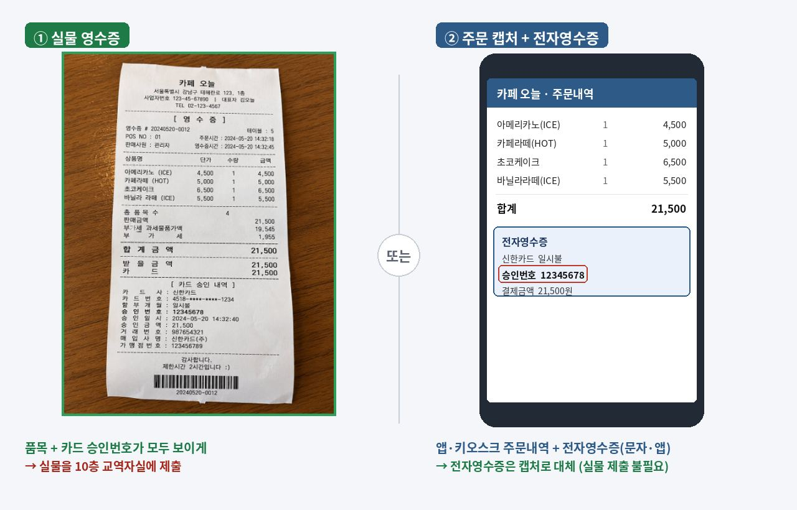

SAEMTEO · LEADER GUIDE
사랑의교회 청년부 · 양육국
앱 QT 화면으로도 모임은 가능하지만, 샘지기는 큐티책으로 진행하시길 권합니다. 책에는 그 달 본문의 개관과 D형 큐티 방법 등 나눔을 이끌 때 참고할 자료가 실려 있어, 흐름을 잡는 데 큰 도움이 됩니다.
매주 모임이 끝나면 그 주차 폴더에 두 가지를 올립니다.
2주차 모임 사진은 반드시 '2주차' 폴더에 올립니다. 폴더를 잘못 올리면 그 주차가 비어 있는 것으로 처리됩니다.

밝고 선명하게, 접히거나 잘리지 않게 전체가 나오도록.
사진 업로드는 확인용일 뿐입니다. 카드 영수증이 전자영수증이 아니라면 반드시 실물을 10층 청년부 교역자실 앞 테이블에 제출해야 정산됩니다.
정산폼은 환영 메일 링크로 엽니다. 계좌와 등록 샘원 명단은 이미 채워져 있습니다. 아래 세 가지만 입력하면 됩니다.
인원·인당·받을 금액은 자동 계산됩니다. 회색 칸은 만지지 마세요.
1인당 5,000원, 주 1회. 받을 금액은 영수증 합계와 5,000원 × 인원 중 작은 쪽입니다.
| 예시 | 인원 | 영수증 | 받을 금액 |
|---|---|---|---|
| 3명, 15,000원 | 3 | 15,000 | 15,000 (1인 5,000 상한) |
| 3명, 12,000원 | 3 | 12,000 | 12,000 (1인 4,000, 실비) |
| 구분 | 내용 |
|---|---|
| 온라인 | 정산폼 작성과 사진 업로드 — 익월 첫 번째 주일 오후 8시까지 |
| 오프라인 | 실물 영수증(품목 + 카드 승인번호)을 10층 청년부 교역자실 앞 테이블에 제출. 운영월 마지막 주일 또는 익월 첫 번째 주일, 각 오후 8시까지 샘지기 이름 가나다순 번호 파일함에 넣습니다 — 제출 방법 |
| 지급 | 제출 후 2~3주 내 순차 지급 |
이 기간이 지나면 정산이 어려우니 꼭 기간 안에 부탁드립니다. 정확한 날짜는 그달 환영 메일에 안내되고, 마감 3일 전까지 미작성이면 리마인드 메일이 갑니다.